Folders and subfolders
Group hosts by project, client or provider. Give them icons, colors, tags and notes. Drag to reorder, switch a host or a whole folder off without deleting it.
Free and open source
Folders, search, server status, backups and sync for your SSH hosts, in a tidy panel inside your editor. Everything is stored as comments in your normal ~/.ssh/config, so ssh and every other tool keep working exactly as before.
Open VSX is the store behind Cursor, VSCodium, Windsurf and other VS Code based editors. All install options
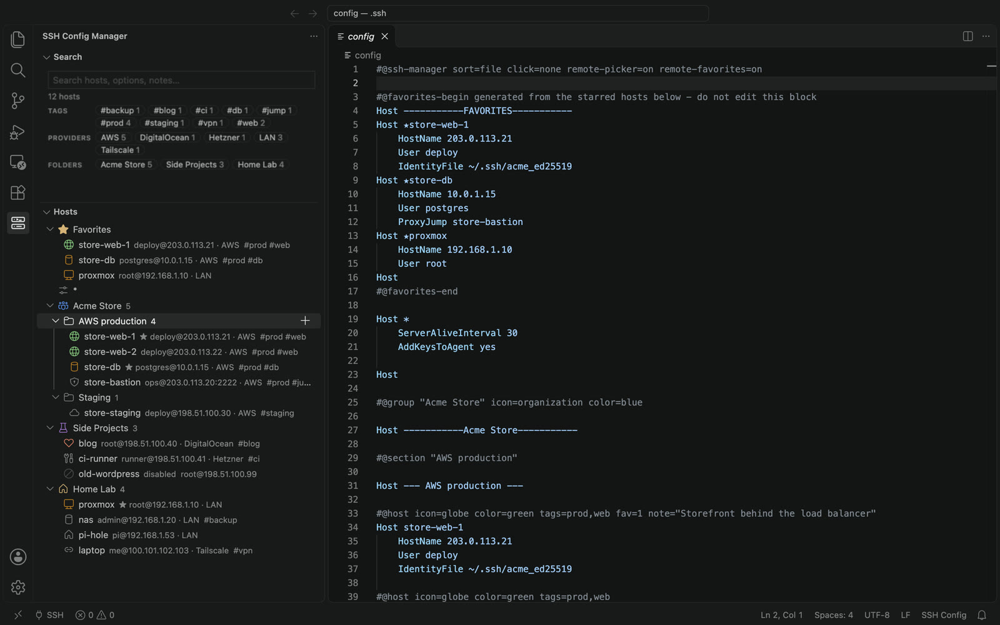
Features
Built for people with ten hosts, and for people with two hundred.
Group hosts by project, client or provider. Give them icons, colors, tags and notes. Drag to reorder, switch a host or a whole folder off without deleting it.
In a terminal, in this window or in a new one. From the panel, the quick picker, the status bar or the home page. Straight into a folder on the server if you like.
The editor’s own “Connect to Host” list gets the same folders: a heading for each one, a gap between them, and your favorites on top.
A copy of the config is saved next to it before every change. Pick any earlier version from the list and it is back.
Share one config through Dropbox, iCloud Drive or OneDrive. Your SSH keys are never synced.
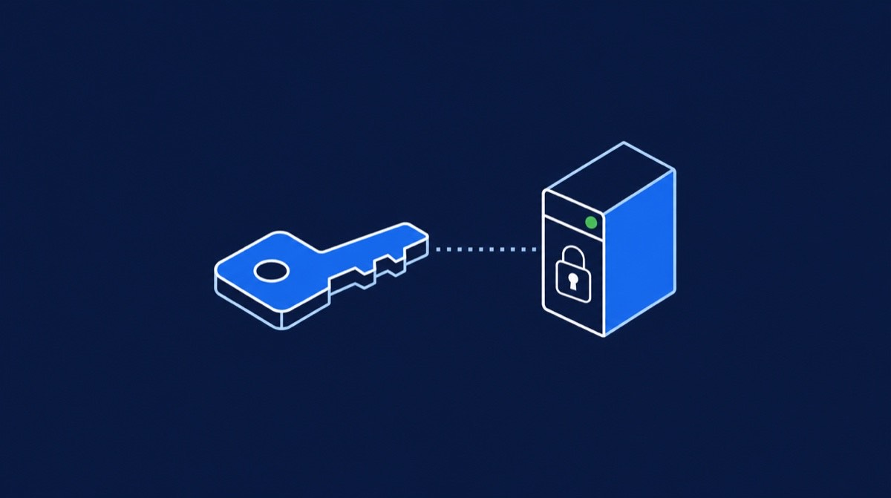
See which hosts need a key that is not on this computer, and create or pick one in a single step.
A small dot on every host shows whether the server answers right now: green for up, red for down. A folder turns yellow when some of its hosts are up and some are down, and tells you how many.
Test Connection runs the steps ssh takes, in order, and shows which one fails and how to fix it: the config, the name, the port, the key, the login.
By name, address, tag, note or option, with one-click filters by tag, provider and folder.
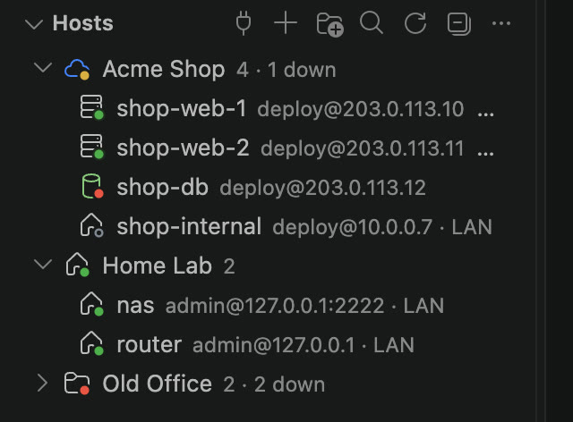
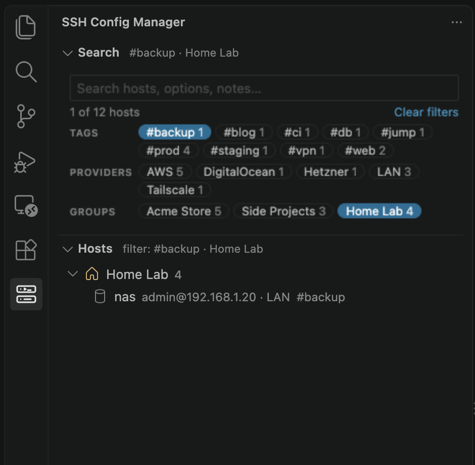
SSH Home
A home page that opens when the editor starts with nothing else to show: favorites and recent hosts first, then every folder.
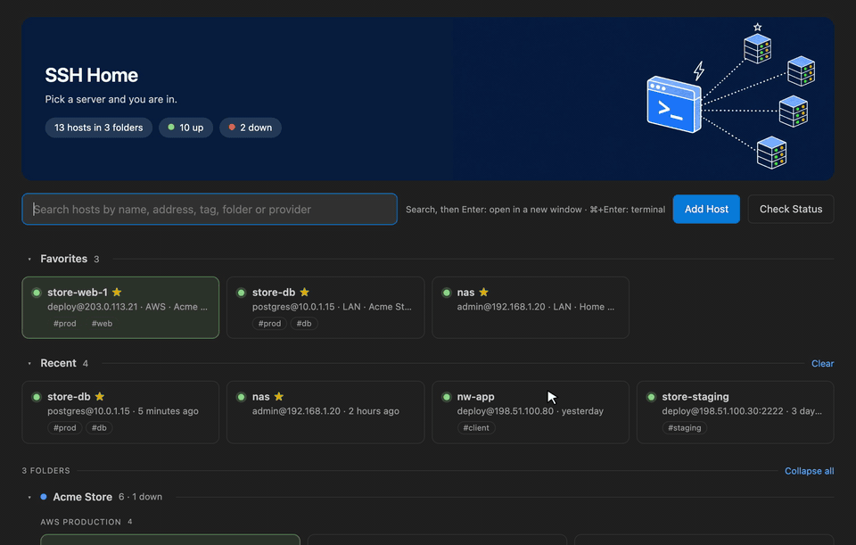
How it works
There is no database and no hidden settings file. Folders, icons, tags, favorites and even the extension’s own settings are written as #@… comment lines, which OpenSSH ignores.
#@ssh-manager sort=name click=terminal
#@group "Acme Store" icon=cloud color=blue
#@section "AWS production"
#@host icon=globe color=green tags=prod,web fav=1
Host store-web-1
HostName 203.0.113.21
User deploy
IdentityFile ~/.ssh/acme_ed25519
#@host icon=database tags=prod,db note="Main DB"
Host store-db
HostName 10.0.1.15
User postgres
ProxyJump store-bastion
#@off Host old-wordpress
#@off HostName 198.51.100.99ssh reads the rest, as always.A closer look
Click a picture to see it full size.
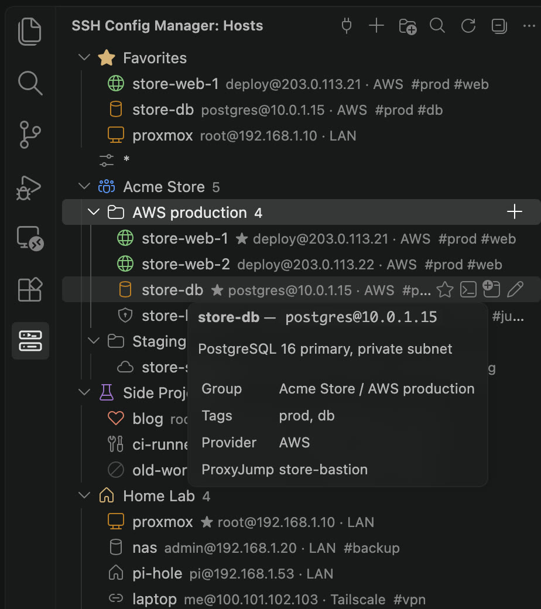
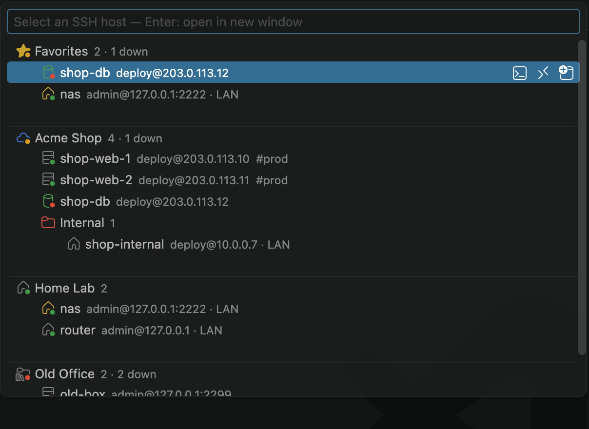
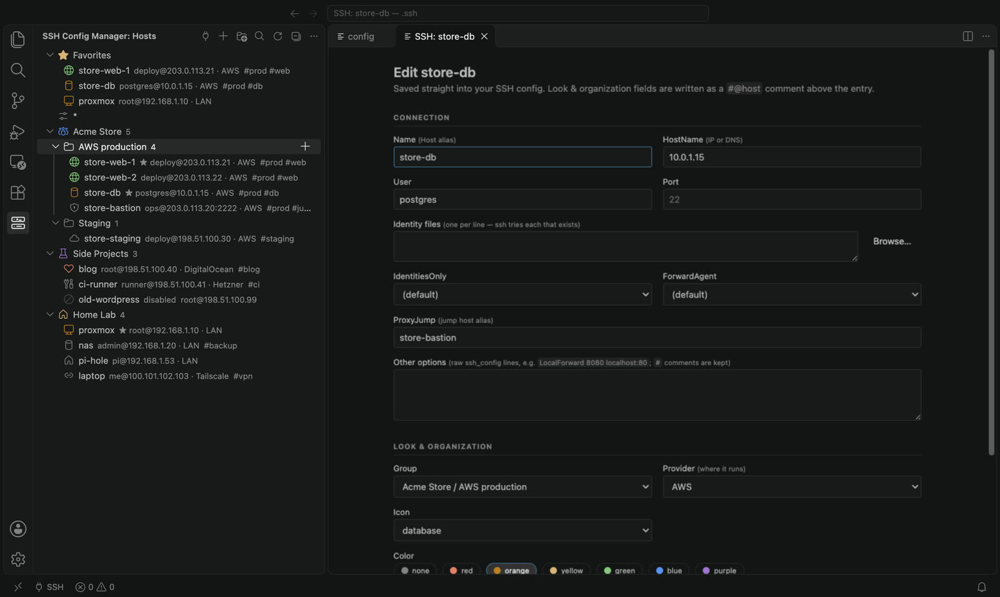
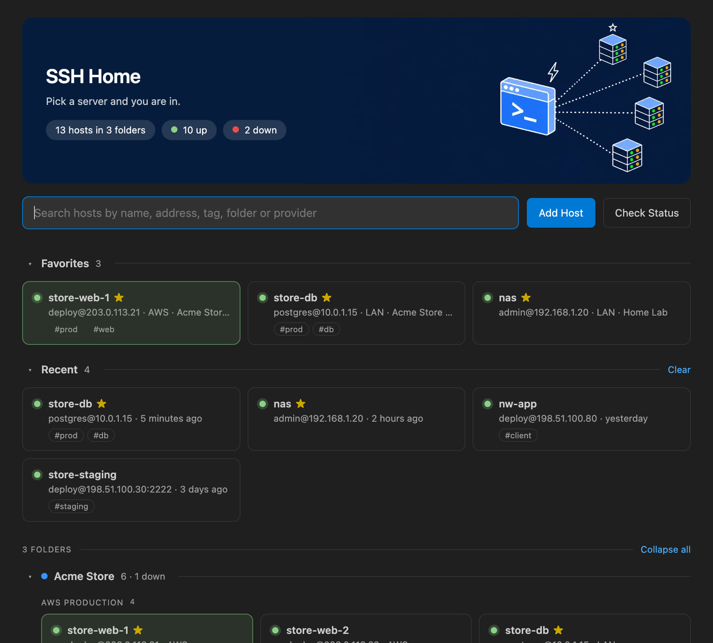
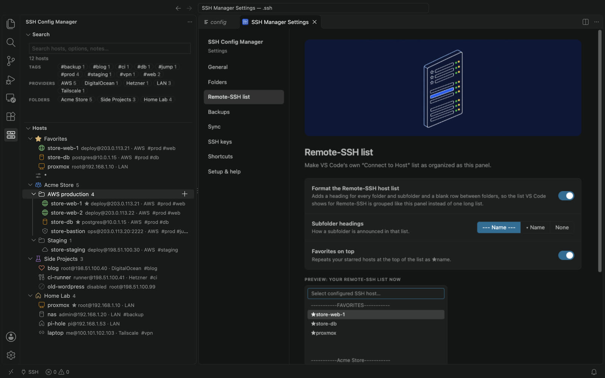
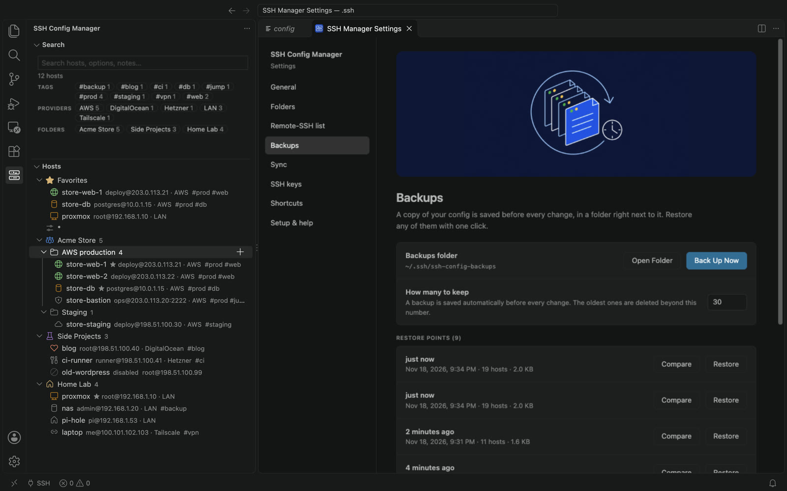
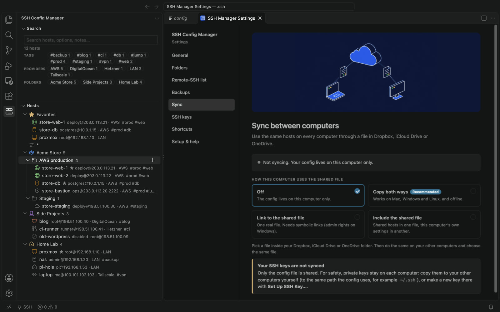
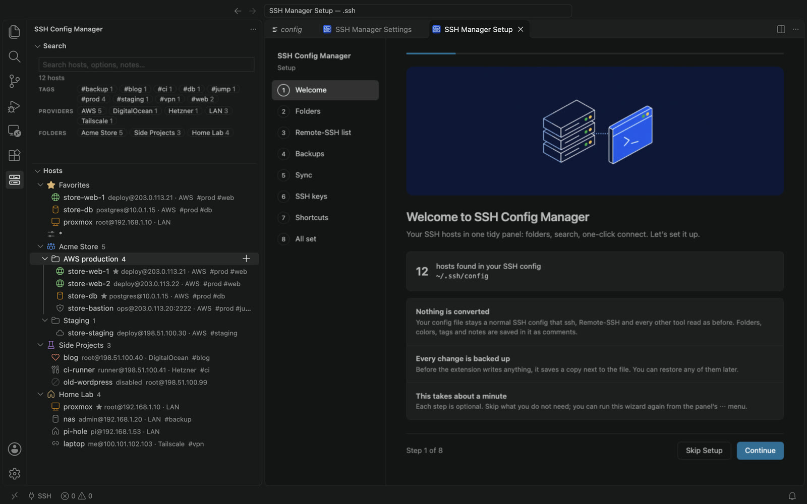
Install
The same extension everywhere, free, under the MIT license.
Search for SSH Config Manager in the Extensions view, or use a button.
code --install-extension vrxt.ssh-config-managerSearch for SSH Config Manager in your editor’s Extensions view, or use a button.
codium --install-extension vrxt.ssh-config-managerFor computers without a store. In the Extensions view choose ⋯ → Install from VSIX… and pick the file.
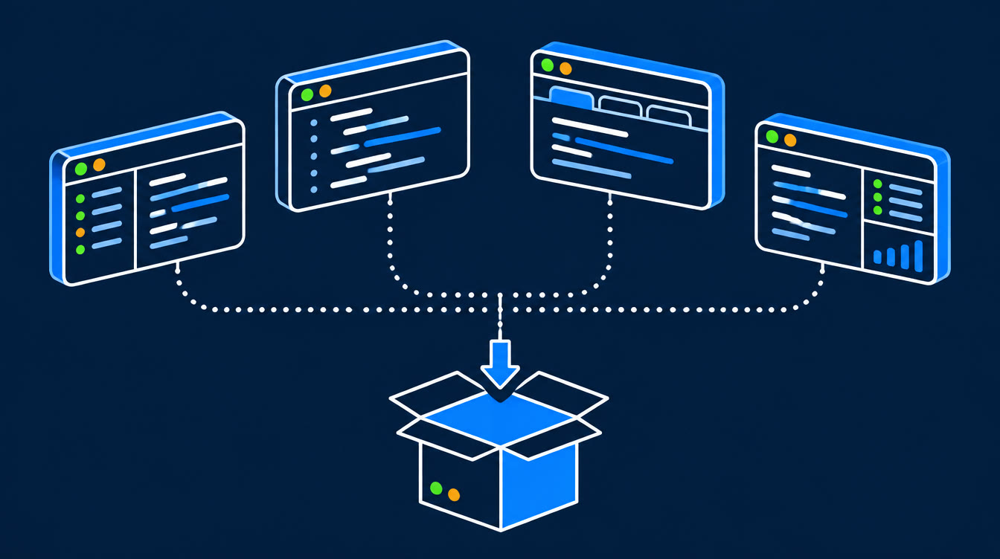
~/.ssh/config is listed right away. Nothing is written until you change something.Opening a server in an editor window uses the SSH extension your editor has: Remote - SSH in VS Code, Cursor’s own in Cursor, Open Remote - SSH in VSCodium. Connecting in a terminal needs nothing extra.
Questions
Not until you change something yourself. Reading and listing never writes. When you do edit, only that host’s block is rewritten, and a backup of the whole file is saved first.
ssh in a terminal still work the same?Yes. Everything the extension adds is a comment line, and OpenSSH skips comments. Other tools that read the file are not affected either.
No. There is no account and no telemetry. Sync, if you turn it on, is a file in a folder you choose, such as Dropbox, iCloud Drive or OneDrive. SSH keys are never part of it.
Yes. Point the extension at any file, and hosts from Included files are shown too.
Hand-written layouts with banner comments for projects and sub-headings are understood as folders and subfolders as they are, without rewriting them.
Yes. The extension runs on your own computer, so your hosts are there in local and remote windows alike.
Nothing. It is open source under the MIT license.